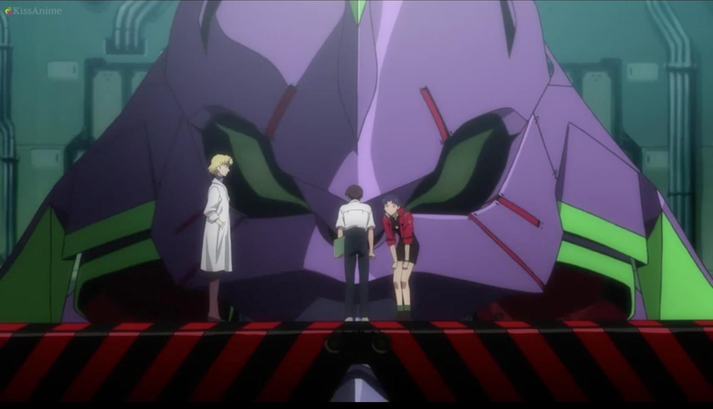
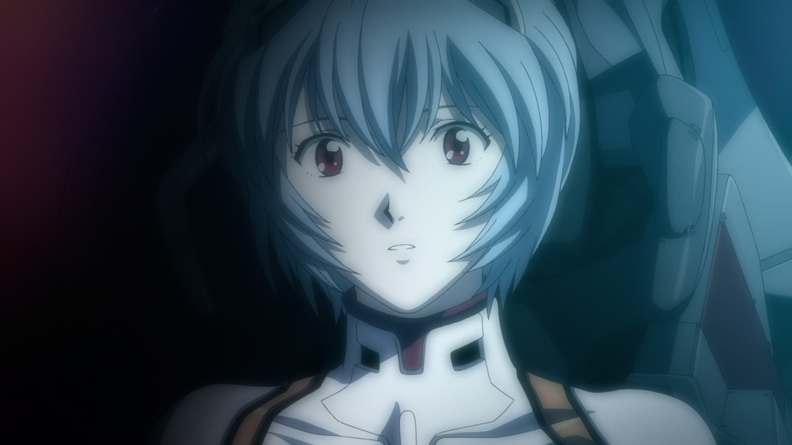
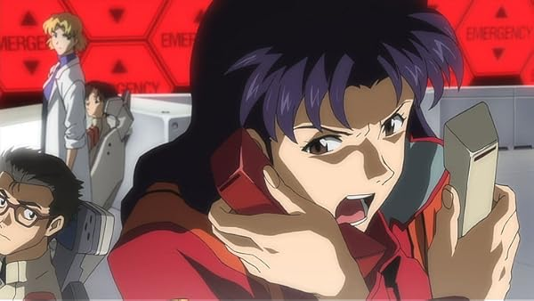

Evangelion: 1.0 You Are (Not) Alone
The first film in the Rebuild of Evangelion series retells the beginning of Shinji Ikari's story. After arriving in Tokyo-3, Shinji is drawn into the conflict between NERV and the mysterious Angels. The movie keeps the dark atmosphere of Evangelion while rebuilding the story with updated visuals, stronger cinematic pacing, and a colder sense of isolation.
Open IMDb PageMovie Screenshots


